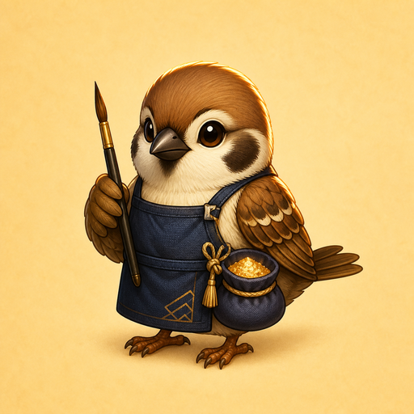

Repair commission
Align 3 base shards, snap clean seams, brush gold lacquer, and learn the star order.

Align porcelain shards in 3D, snap clean seams, brush gold lacquer, and complete the repair before lacquer skins over.
Controls: click/tap shards or drag the tray; WASD/Arrow keys slide, Q/E Rotate Yaw, Z/X Tilt Pitch/Roll, Space/Enter Snap Shard, B Brush Lacquer, C Place Clamp, D Dust Gold, W Warm Lamp, S Cool Tray, Shift/F Star Focus, P pause, R restart.